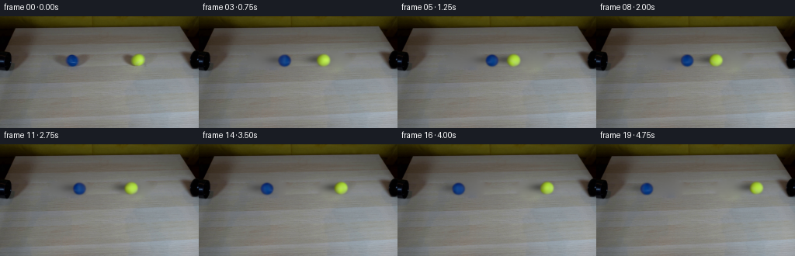
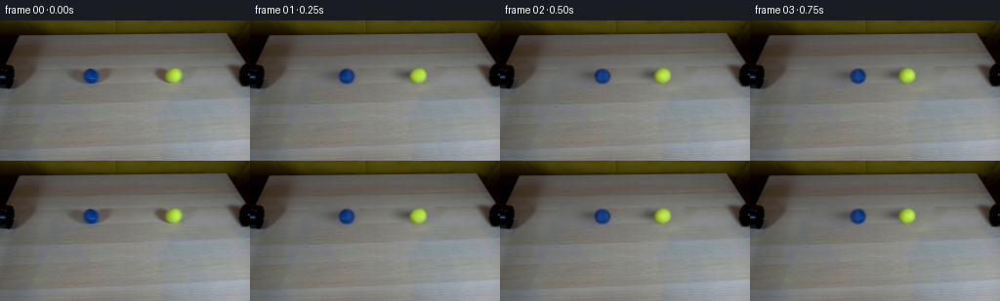

CODING AGENTS AS PIXEL WORLD MODELS
traex/GPT-6.1-Sol · 0032
点击播放 · 原生 RGB 像素
逐轮保存的候选
回放视频、检查图与代码变化。
每份候选均可单独播放。实际图片检查记录在下方工具轨迹中。
候选 01播放与检查图
点击播放 · 原生 RGB 像素


展开代码变化
--- 上一保存版本
+++ 本次保存版本
@@ -0,0 +1,191 @@
+from pathlib import Path
+import numpy as np
+from PIL import Image
+from scipy import ndimage, sparse
+from scipy.sparse.linalg import spsolve
+from scipy.optimize import minimize
+import artifact_io
+
+ROOT = Path(__file__).resolve().parent
+SOURCE = np.asarray(Image.open(ROOT / 'first_frame.png').convert('RGB'), dtype=np.float64)
+H, W = SOURCE.shape[:2]
+Y, X = np.mgrid[:H, :W]
+
+
+def background():
+ # Small, hand specified bounds surround the two moving objects and their
+ # cast shadows. Everything else remains the original locked-off plate.
+ regions = [((90.0, 56.0), (29.0, 11.1)),
+ ((173.0, 56.0), (24.0, 11.5))]
+ mask = np.zeros((H, W), bool)
+ for (cx, cy), (rx, ry) in regions:
+ mask |= ((X-cx)/rx)**2 + ((Y-cy)/ry)**2 < 1
+ yy, xx = np.where(mask)
+ index = np.full((H, W), -1, int)
+ index[mask] = np.arange(len(xx))
+ rows, cols, vals = [], [], []
+ rhs = np.zeros((len(xx), 3))
+ for i, (y, x) in enumerate(zip(yy, xx)):
+ rows.append(i); cols.append(i); vals.append(4.)
+ for dy, dx in ((0, 1), (0, -1), (1, 0), (-1, 0)):
+ j = index[y+dy, x+dx]
+ if j >= 0:
+ rows.append(i); cols.append(j); vals.append(-1.)
+ else:
+ rhs[i] += SOURCE[y+dy, x+dx]
+ mat = sparse.csr_matrix((vals, (rows, cols)), shape=(len(xx), len(xx)))
+ result = SOURCE.copy()
+ result[mask] = spsolve(mat, rhs)
+ # Restore low amplitude natural fine grain to the interpolated wood.
+ rng = np.random.default_rng(32)
+ grain = ndimage.gaussian_filter(rng.normal(size=(H, W)), (.45, .9))
+ depth = np.clip(ndimage.distance_transform_edt(mask)/3, 0, 1)
+ result += grain[..., None] * depth[..., None] * .7
+ return result
+
+
+BG = background()
+SS = 4
+
+
+def sphere_basis(cx, cy, rx, ry, sigma, bounds):
+ x0, y0, x1, y1 = bounds
+ yy, xx = np.mgrid[y0:y1:1/SS, x0:x1:1/SS]
+ xx = xx + .5/SS - .5
+ yy = yy + .5/SS - .5
+ nx, ny = (xx-cx)/rx, (yy-cy)/ry
+ rr = nx*nx+ny*ny
+ nz = np.sqrt(np.maximum(0, 1-rr))
+ a = (rr <= 1).astype(float)
+ fields = np.stack([a, a*nx, a*ny, a*nz, a*nx*ny], axis=-1)
+ fields = ndimage.gaussian_filter(fields, (sigma*SS, sigma*SS, 0))
+ hh, ww = y1-y0, x1-x0
+ return fields.reshape(hh, SS, ww, SS, 5).mean((1, 3))
+
+
+def shadow(cx, cy, strength, xx=X, yy=Y):
+ # Light is to the camera's right: both shadows lie behind and left.
+ main = np.exp(-.5*((xx-(cx-9.0))/10.0)**2
+ -.5*((yy-(cy-1.0))/3.6)**2)
+ contact = np.exp(-.5*((xx-(cx-.8))/5.8)**2
+ -.5*((yy-(cy+6.1))/1.3)**2)
+ return np.clip(1-strength*main-.14*contact, .38, 1)
+
+
+def prepare_ball(cx, cy, strength):
+ bounds = (int(cx)-16, int(cy)-15, int(cx)+17, int(cy)+16)
+ x0, y0, x1, y1 = bounds
+ original = SOURCE[y0:y1, x0:x1]
+ bg = BG[y0:y1, x0:x1]
+ xx, yy = X[y0:y1, x0:x1], Y[y0:y1, x0:x1]
+ under = bg*shadow(cx, cy, strength, xx, yy)[..., None]
+
+ def fit(p, full=False):
+ px, py, rx, ry, sig = p
+ basis = sphere_basis(px, py, rx, ry, sig, bounds)
+ alpha = basis[..., 0]
+ target = original - under*(1-alpha[..., None])
+ # Variable projection: the diffuse light field is linear in normals.
+ coeff = np.linalg.lstsq(basis.reshape(-1, 5), target.reshape(-1, 3), rcond=None)[0]
+ pred = basis@coeff + under*(1-alpha[..., None])
+ error = pred-original
+ # Weakly discourage implausible radius/PSF choices.
+ loss = np.mean(np.minimum(error*error, 300)) + .1*(rx-7.8)**2 + .1*(ry-7.8)**2
+ if full:
+ return basis, coeff, pred, alpha
+ return loss
+
+ p0 = [cx, cy, 7.8, 7.8, .75]
+ opt = minimize(fit, p0, method='Nelder-Mead',
+ bounds=[(cx-.8,cx+.8),(cy-.8,cy+.8),(7,9),(7,9),(.45,1.2)],
+ options={'maxiter': 200, 'xatol': .01})
+ p = opt.x
+ basis, coeff, pred, alpha = fit(p, True)
+ print('ball', cx, 'parameters', p, 'error', opt.fun, 'coefficients', coeff.tolist())
+ # Keep the actual photographic material, including the subtle felt seam.
+ # This field is a correction to the fixed diffuse illumination, not a
+ # rotating light source.
+ residual = (original-pred)/np.maximum(alpha[..., None], .15)
+ weight = np.clip((alpha-.15)/.6, 0, 1)
+ residual *= weight[..., None]
+ return {'p': p, 'coeff': coeff, 'residual': residual, 'bounds': bounds,
+ 'strength': strength, 'alpha': alpha}
+
+
+def draw_ball(image, ball, cx, cy, angle):
+ _, _, rx, ry, sigma = ball['p']
+ x0, y0 = max(0, int(cx)-15), max(0, int(cy)-15)
+ x1, y1 = min(W, int(cx)+17), min(H, int(cy)+17)
+ hh, ww = y1-y0, x1-x0
+ yy, xx = np.mgrid[y0:y1:1/SS, x0:x1:1/SS]
+ xx += .5/SS - .5
+ yy += .5/SS - .5
+ nx, ny = (xx-cx)/rx, (yy-cy)/ry
+ r2 = nx*nx+ny*ny
+ nz = np.sqrt(np.maximum(0, 1-r2))
+ alpha = (r2 <= 1).astype(float)
+ normals = np.stack([np.ones_like(nx), nx, ny, nz, nx*ny], -1)
+ color = normals@ball['coeff']
+ # Rotate the photographic felt about the transverse rolling axis while
+ # the illumination stays fixed in world coordinates.
+ ox = np.cos(angle)*nx + np.sin(angle)*nz
+ oy = ny
+ p = ball['p']
+ bx, by, _, _ = ball['bounds']
+ sample_x = p[0]+ox*rx-bx
+ sample_y = p[1]+oy*ry-by
+ for channel in range(3):
+ detail = ndimage.map_coordinates(ball['residual'][..., channel],
+ [sample_y, sample_x], order=1,
+ mode='constant', cval=0)
+ color[..., channel] += detail
+ color = np.clip(color, 0, 255)*alpha[..., None]
+ color = ndimage.gaussian_filter(color, (sigma*SS, sigma*SS, 0))
+ alpha = ndimage.gaussian_filter(alpha, sigma*SS)
+ color = color.reshape(hh, SS, ww, SS, 3).mean((1, 3))
+ alpha = alpha.reshape(hh, SS, ww, SS).mean((1, 3))
+ image[y0:y1, x0:x1] = image[y0:y1, x0:x1]*(1-alpha[..., None])+color
+
+
+def main():
+ blue = prepare_ball(92.9, 57.0, .27)
+ yellow = prepare_ball(177.7, 56.3, .40)
+ Image.fromarray(np.uint8(np.clip(BG, 0, 255))).save(ROOT/'.tmp/background.png')
+ np.savez(ROOT/'.tmp/balls.npz', blue_p=blue['p'], yellow_p=yellow['p'])
+ origin_blue = blue['p'][:2]
+ origin_yellow = yellow['p'][:2]
+ line = origin_yellow-origin_blue
+ separation = np.linalg.norm(line)
+ direction = line/separation
+ contact_distance = blue['p'][2]+yellow['p'][2]
+ travel = (separation-contact_distance)/2
+ collision_time = 1.5
+ drag = .8
+ incoming_speed = travel/collision_time+.5*drag*collision_time
+ impact_speed = incoming_speed-drag*collision_time
+ rebound_speed = .93*impact_speed
+ frames = [SOURCE.astype(np.uint8)]
+ positions = []
+ for i in range(1, 20):
+ t = i/4
+ if t <= collision_time:
+ distance = incoming_speed*t-.5*drag*t*t
+ else:
+ elapsed = t-collision_time
+ distance = travel-(rebound_speed*elapsed-.5*drag*elapsed*elapsed)
+ cb = origin_blue+direction*distance
+ cy = origin_yellow-direction*distance
+ image = BG.copy()
+ image *= shadow(*cb, blue['strength'])[..., None]
+ image *= shadow(*cy, yellow['strength'])[..., None]
+ draw_ball(image, blue, *cb, distance/blue['p'][2])
+ draw_ball(image, yellow, *cy, -distance/yellow['p'][2])
+ frames.append(np.rint(np.clip(image, 0, 255)).astype(np.uint8))
+ positions.append((i, *cb, *cy))
+ frames = np.stack(frames)
+ np.savetxt(ROOT/'.tmp/positions.txt', positions, fmt='%.3f')
+ artifact_io.save(frames, ROOT)
+
+
+if __name__ == '__main__':
+ main()
可观测工具轨迹
实际执行的命令与返回图片。
命令 1exit 0
/bin/bash -lc "ls -la && cat prompt.txt && printf '\\n---RULES---\\n' && cat GENERATION_RULES.md"
命令 2exit 0
/bin/bash -lc "cat artifact_io.py && python - <<'PY'
from PIL import Image
import numpy as np
im=np.array(Image.open('first_frame.png'));print(im.shape)
print('ranges', im.min(axis=(0,1)),im.max(axis=(0,1)))
# coarse RGB quantized symbols dominant classification
im=im.astype(float)
for y in range(0,144,3):
s=''
for x in range(0,256,3):
r,g,b=im[y:y+3,x:x+3].mean((0,1))
if b>r*1.2 and b>g*1.05: c='B'
elif r>100 and g>100 and b<g*.65: c='Y'
elif max(r,g,b)<50:c='#'
elif max(r,g,b)<100:c='O'
elif max(r,g,b)<150:c='o'
elif max(r,g,b)<200:c='.'
else:c=' '
s+=c
print(s)
PY"命令 3exit 0
/bin/bash -lc "python - <<'PY'
from PIL import Image
import numpy as np
from scipy import ndimage
im=np.array(Image.open('first_frame.png'));r,g,b=im.astype(float).transpose(2,0,1)
masks={'blue':(b>r*1.3)&(b>g*1.1)&(b>60),'yellow':(g>100)&(r>65)&(b<g*.6)}
for n,m in masks.items():
l,k=ndimage.label(m)
for j in range(1,k+1):
yy,xx=np.where(l==j)
if len(xx)>5: print(n,len(xx),'bbox',xx.min(),xx.max(),yy.min(),yy.max(),'center',xx.mean(),yy.mean(),'mean',im[l==j].mean(0))
print('samples')
for y in [0,10,20,30,40,45,50,55,60,65,70,80,100,120,143]:
print(y,[(x,im[y,x].tolist()) for x in [0,5,10,15,20,25,30,40,50,60,70,80,90,95,100,105,110,120,128,140,150,160,165,170,175,180,185,190,200,220,230,240,250,255]])
print('map every pixel')
for y in range(43,71):
s=''
for x in range(0,256):
R,G,B=im[y,x]
if masks['blue'][y,x]: c='B'
elif masks['yellow'][y,x]:c='Y'
elif max(R,G,B)<25:c='#'
elif max(R,G,B)<45:c='X'
elif max(R,G,B)<65:c='O'
elif max(R,G,B)<85:c='o'
elif max(R,G,B)<105:c=':'
elif max(R,G,B)<125:c='.'
elif max(R,G,B)<150:c='-'
else:c=' '
s+=c
print(f'{y:3}',s)
PY"命令 4exit 0
/bin/bash -lc "python - <<'PY'
from PIL import Image
import numpy as np
im=np.array(Image.open('first_frame.png')).astype(float)
# detailed luminance segments and chroma
for y in range(35,73):
s=''
for x in range(55,201):
r,g,b=im[y,x];v=(r+g+b)/3
if b-r>15:c='B'
elif g-b>45 and g>r:c='Y'
elif r-b>17:c='T'
else:c='0123456789abcdef'[min(15,int(v/10))]
s+=c
print(f'{y:2}',s)
print('\\nBallRGB grid')
for y in range(47,67):
print('y',y, ' '.join('%d,%d,%d'%tuple(im[y,x]) for x in range(83,104)))
PY"命令 5exit 0
/bin/bash -lc "python - <<'PY' import importlib.util for m in ['cv2','scipy','PIL','numpy']:print(m, bool(importlib.util.find_spec(m))) PY"
命令 6exit 0
/bin/bash -lc "python - <<'PY'
import numpy as np
from PIL import Image
im=np.array(Image.open('first_frame.png'))
for y in range(46,69):
print(y,' '.join('%02d:%s'%(x,','.join(str(v) for v in im[y,x])) for x in range(165,190)))
PY"命令 7exit 0
/bin/bash -lc 'OPENBLAS_NUM_THREADS=1 python generate.py'
命令 8exit 0
/bin/bash -lc "python - <<'PY'
import numpy as np
from PIL import Image
im=np.array(Image.open('.tmp/background.png')).astype(float)
for y in range(46,68):
s=''
for x in range(60,200):
r,g,b=im[y,x];v=(r+g+b)/3
if b-r>15:c='B'
elif g-b>45 and g>r:c='Y'
elif r-b>17:c='T'
else:c='0123456789abcdef'[min(15,int(v/10))]
s+=c
print(f'{y:2}',s)
PY"命令 9exit 0
/bin/bash -lc "OPENBLAS_NUM_THREADS=1 python generate.py && python - <<'PY'
import numpy as np
from PIL import Image
from scipy import ndimage
f0=np.array(Image.open('first_frame.png'))
for n in [0,1,3,6,7,9,13,19]:
im=np.array(Image.open('frames/%02d.png'%n));r,g,b=im.astype(float).transpose(2,0,1)
print('frame',n)
for name,m in [('B',(b-r>30)&(b>g+30)&(b>65)),('Y',(g-b>60)&(g>110)&(r>70))]:
l,k=ndimage.label(m)
for j in range(1,k+1):
yy,xx=np.where(l==j)
if len(xx)>30:print(name,len(xx),xx.mean(),yy.mean(),'bbox',xx.min(),xx.max(),yy.min(),yy.max(),'rgb',im[l==j].mean(0).round(1))
print('change',np.mean(np.abs(im.astype(float)-f0)), 'max',im.max())
print('first identical',np.array_equal(f0,np.array(Image.open('frames/00.png'))))
PY"命令 10exit 0
/bin/bash -lc "python - <<'PY'
import numpy as np
from PIL import Image
im=np.array(Image.open('.tmp/background.png')).astype(float)
for y in range(47,66):
s=''
for x in range(60,201):
r,g,b=im[y,x];v=(r+g+b)/3
if b-r>15:c='B'
elif g-b>45 and g>r:c='Y'
elif r-b>17:c='T'
else:c='0123456789abcdef'[min(15,int(v/10))]
s+=c
print(f'{y:2}',s)
print('bg scan')
for y in [51,55,59,63]:print(y,[(x,im[y,x].astype(int).tolist()) for x in range(60,201,5)])
PY"命令 11exit 0
/bin/bash -lc "python - <<'PY'
from pathlib import Path
import numpy as np
from PIL import Image
p=np.load('pixels.npz')['pixels']
f=np.stack([np.array(Image.open('frames/%02d.png'%i)) for i in range(20)])
assert f.shape==(20,144,256,3) and f.dtype==np.uint8
assert p.shape==(144,256,20)
assert np.array_equal(f[0],np.array(Image.open('first_frame.png')))
# Scene outside the rolling lane is unchanged exactly.
print('Validated',f.shape,f.dtype,'packed',p.shape)
print('static lower tabletop:', np.array_equal(f[:,90:],np.broadcast_to(f[0,90:],f[:,90:].shape)))
print('Artifacts:', [(n,Path(n).stat().st_size) for n in ['pixels.npz','index.html','generate.py']])
PY"保存候选 1 份；完成命令 11 次；可验证图片返回 0 张。原始 API 响应与完整日志保留在本地。